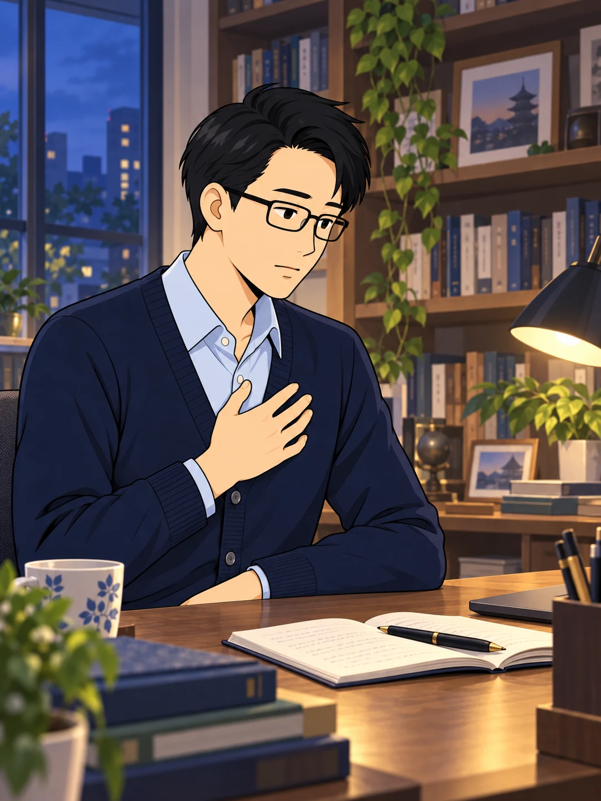
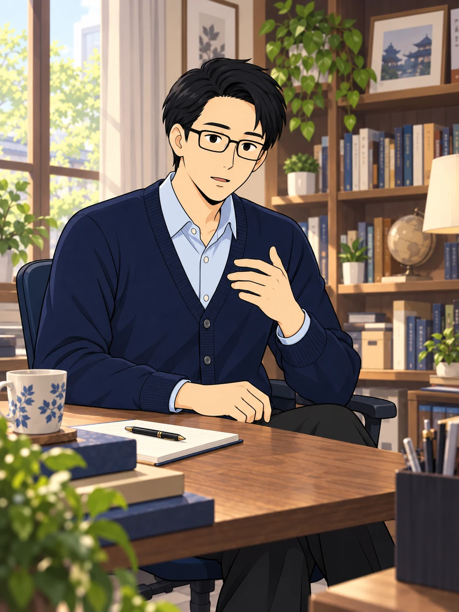
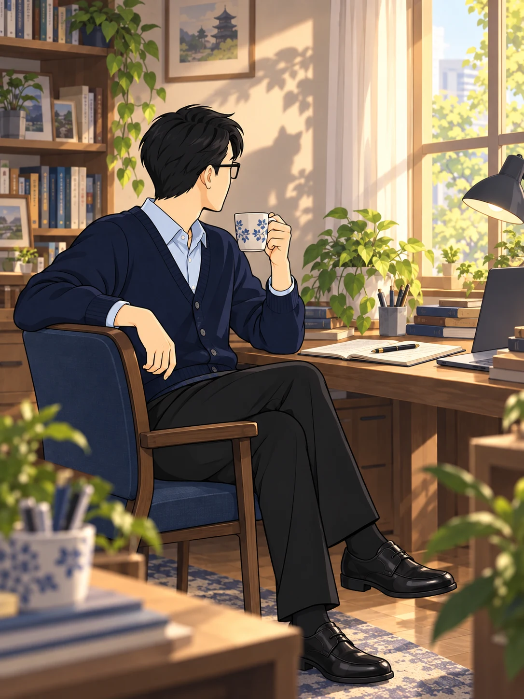
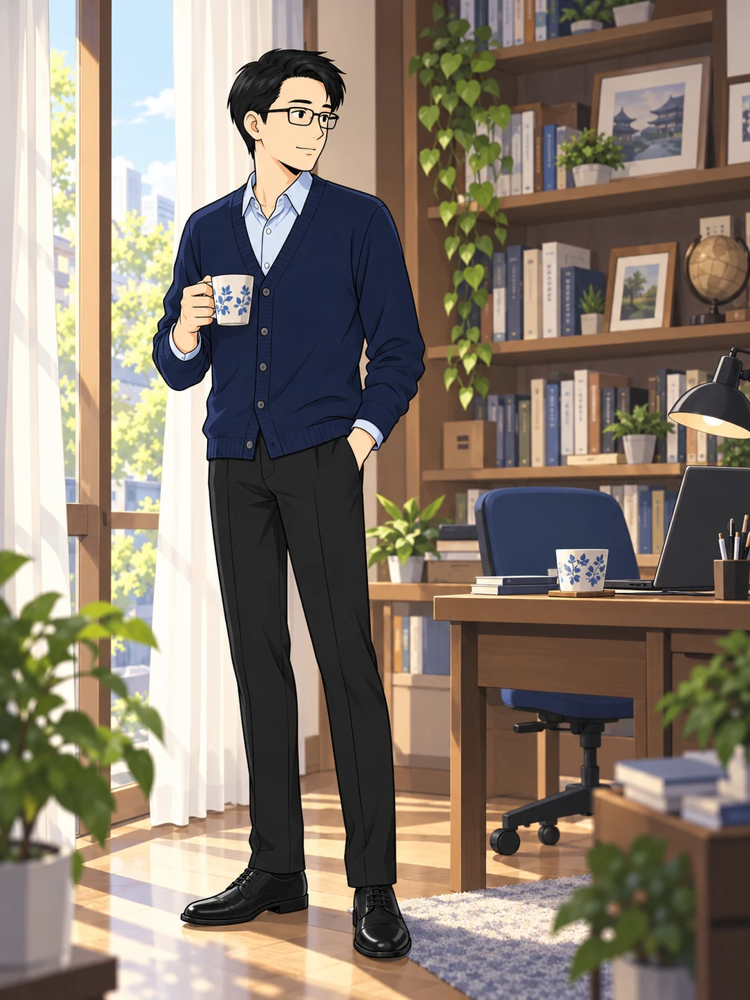

真理を求める日々の中で、
厳しい声に追い詰められたという。

求める気持ちが強いほど、
立ち止まる余裕を失っていった。

どう受け止めれば
いいのだろう……。
体験は、命にかかわる
危機へとつながってしまった。

危機を生き延びた。
だが、それで疑問が
消えたわけではなかった。

今は、少し
休みましょう。
安堵しかけた心を、
不意の言葉が揺さぶった。

先生が聞いたと記す声
実は私は神などではない。
お前を騙していた
化け猫だ……ニャー！
一瞬、ぎくりとした。
けれど、そこで立ち返ったのは、
自分が何を求めてきたかだった。

だが、待て。
私はこれまで、独善ではない
「普遍の真理」を求めて、
真剣に祈り続けてきたのだ。
自分の求める姿勢を確かめ、
先生は、こう答えたという。

……その私が化け猫に
憑かれるわけはないでしょう！
あなたは、絶対に守護神です！
その答えに応えるように、
今度は、温かな声が
届いたと記されている。

先生が聞いたと記す声
そうです。その通りです！
よくぞそこまで
来ましたね！
張りつめていた心が、
静かにほどけていった。

声や現象だけでなく、
自分が何を求めているのか。
その原点を確かめ直した先生は、
霊修行の「第二教程」を終えたと
受け止めた。
この体験を経て、
先生は揺さぶりへの向き合い方に、
ひとつの区切りを見いだした。

私が求めるのは、
誰もが歩める普遍の道。
この原点を、見失うまい。
けれど、探求はまだ続く。
次に向き合うのは、
霊的な現象に従うことの限界だった。